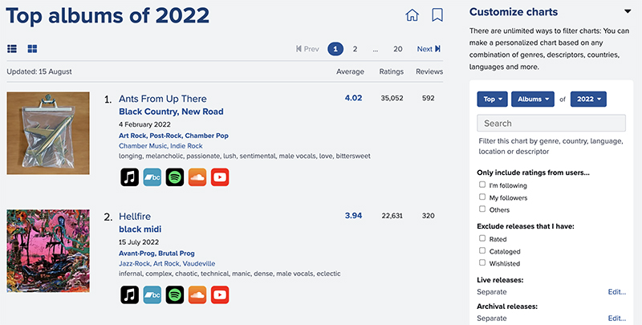
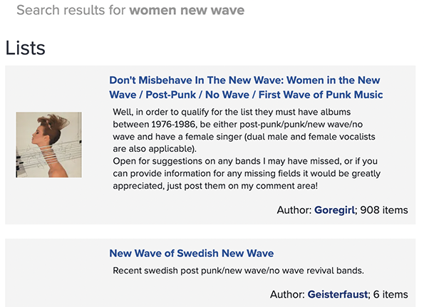

It is an incredible tool that can help you find and learn about new music to listen to.
Let's explore the many ways you can discover music using RYM:
You can find out what is rated the most highly by the RYM community overall by browsing the top charts by decade or year. The thousands of ratings of the community determine where albums, EPs, singles, and more place in the charts. These rankings are updated for old and new releases based on fresh data every week.
You can browse through the charts to learn more about releases, including track listings, credits, and reviews and comments by members.
If you are a RYM member you can add the release to your catalog and assign it a rating or wishlist it for later listening. You can add as little or as much detail as you like when you catalog a release: feel free to assign personally meaningful tags, rate individual tracks, or even write a review. You can also see the average rating and individual ratings of the release by your friends.
If you become a member of RYM, you can keep track of what you own and have listened to. You can use release and track ratings to help you remember what you thought of your favorite (or least favorite!) music, wishlist releases you want to hear later, and write reviews when you want to share your thoughts with the community.
The more you catalog and rate on RYM, the more useful it will become to you. You'll be able to search your catalog by artist, release, genre, and year.
In addition to telling people you already know who love music that they should join you, there are many ways to connect with RYM members.
Perhaps you have encountered a well-written review or a list that you love. Maybe you are browsing the forums and spot a member with similar taste or someone with specialized knowledge about an artist or genre you've meant to explore.
